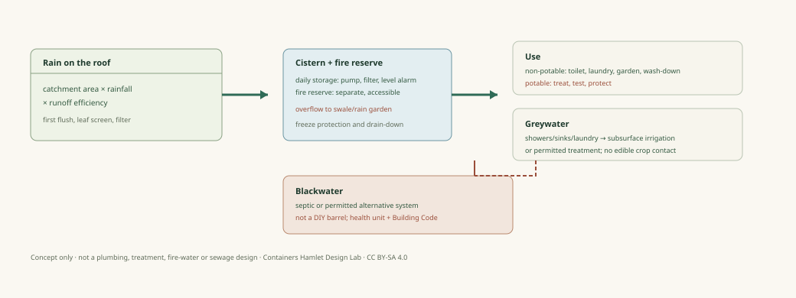

Rain, greywater, blackwater
Keep the water cycles separate.
A hamlet can harvest rain, reuse greywater and return blackwater safely, but those are three different systems with three different approvals. A single “water tank” is not a water strategy.
Not a plumbing, treatment or sewage design. Ontario Building Code Part 8, the local health unit, fire service and a qualified designer govern the real system. Potable water needs treatment and testing; fire water needs a fire-service connection.
The water cycle

Rainwater harvesting
The first calculation is simple: catchment area × rainfall × runoff efficiency. A 36 m² cabin roof at 900 mm/year with 85% capture yields about 27,500 L/year before first-flush losses. Use local rainfall, not this illustrative number.
- Catchment: roof area and material; a metal roof is easier to keep clean than a rough or coated surface.
- First flush and filtration: divert the first rain and screen leaves; a filter is not a potable treatment.
- Storage: size for dry spells, fire reserve and overflow — not just the annual total.
- Freeze protection: drain-down, frost-protected lines or an indoor tank room; a full outdoor cistern can freeze.
- Potable use: filtration, disinfection and testing; do not assume rainwater is safe to drink.
Illustrative rainwater calculator
This calculator only does arithmetic. It does not size a real system or approve a potable supply.
Greywater details
Greywater
Greywater is wastewater from showers, baths, sinks and laundry — not toilet water. It can reduce potable demand for subsurface irrigation or be treated for reuse, but it is not automatically allowed and it is not clean water.
- Use subsurface irrigation, not spray or surface ponding.
- Keep it away from edible crops, wells, the lake, wetlands and neighbours.
- Avoid strong cleaners, bleach, salts, grease and food solids.
- Provide a bypass to the septic system and a maintenance plan.
- Confirm the Ontario Building Code, health unit and conservation-authority requirements; do not plumb it into the potable system.
Blackwater and sewage details
Blackwater and sewage
Toilet water needs a proper septic system or a permitted alternative. Composting and source-separating toilets can work, but they need a manufacturer's instructions, a management plan, health-unit approval and a place for the finished material.
- Septic: siting, separation distances, soil/permeability, tank sizing, drainfield and reserve area; protect from traffic, frost and flooding.
- Composting/alternative: ventilation, leachate, temperature, pathogen reduction, maintenance and approval.
- Do not mix: greywater, blackwater, stormwater and fire water need separate paths and labels.
Fire reserve details
Fire reserve is not the last litre
A fire reserve should be a dedicated, accessible volume with a connection the fire service has tested. It should not be counted as household storage, and it should not depend on a pump that fails in a power outage.
- Agree the volume, flow, duration and connection with the fire department.
- Provide year-round access, a dry hydrant or draft point, and signage.
- Protect the reserve from contamination and freezing; test it.
- Keep the daily cistern and fire reserve separate, or guarantee the reserve with a physical reserve and alarm.
Drought and flood operations
Drought and flood operations
- Drought trigger levels: agree when irrigation stops, when greywater is prioritised, and when water is trucked in.
- Fire reserve: never drawn down for gardens or washing.
- Flood: cistern overflow to a swale/rain garden; protect the tank from buoyancy and contamination; keep the septic above flood level.
- Water quality: test after flooding, long storage or any treatment change.
Rules and sources
Rules and sources
- Ontario Building Code Part 8 — sewage systems.
- Ontario FireSmart and FireSmart Canada.
- ClimateData.ca buildings module.
- Your local health unit, conservation authority, fire department and building official.
No potable-water, sewage, fire-water or plumbing compliance is claimed.